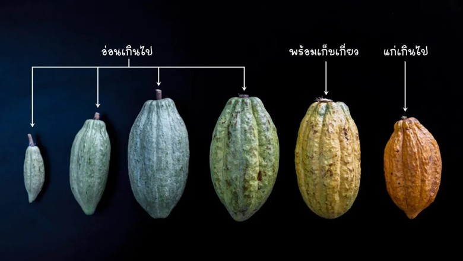
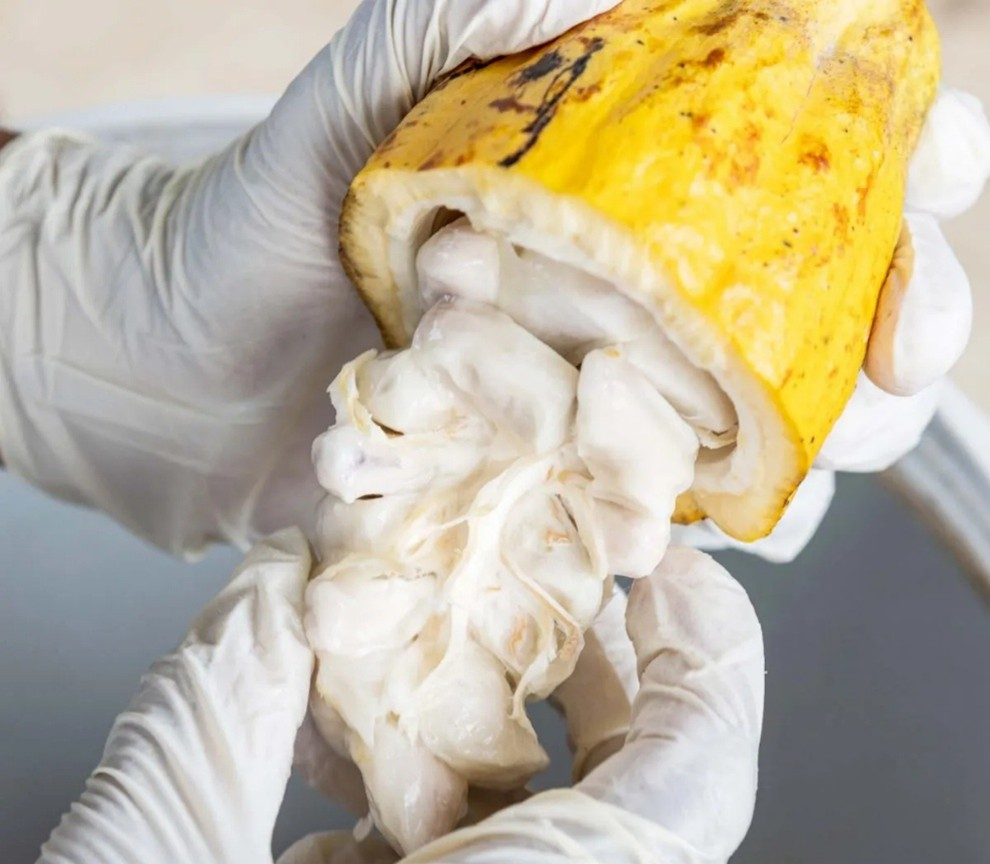
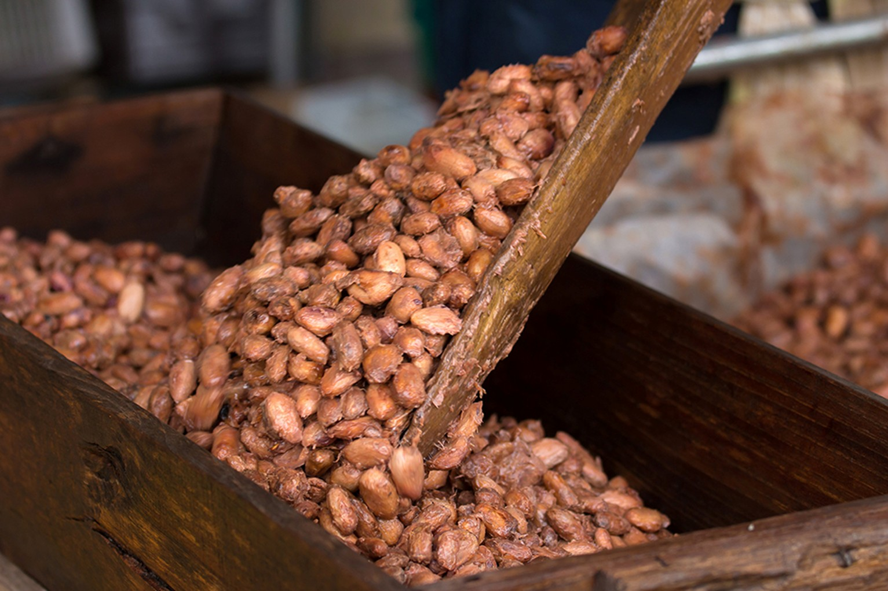

โกโก้จะเริ่มให้ผลผลิตเมื่อย่างเข้าปีที่ 3 โดยโกโก้จะทยอยออกดอกเป็นรุ่นตลอดทั้งปี โดยปกติจะห่างกันประมาณ 2-3 สัปดาห์ หากดูแลดี โกโก้จะให้ผลผลิตตลอดทั้งปี โดยจะเก็บเกี่ยวได้ 2-3 สัปดาห์ต่อครั้ง อายุของผลนับจากดอกบานประมาณ 5-6 เดือน ผลอ่อนสีเขียว ผลแก่สีเหลืองหรือแดง ขึ้นอยู่กับสายพันธุ์ การเก็บผลโกโก้นั้นควรใช้กรรไกรตัดขั้วผลออกจากกิ่ง ไม่ควรใช้มือเด็ด เพื่อป้องกันไม่ให้ขั้วผลช้ำ เพื่อจะได้เกิดเป็นตาดอกและผลรุ่นถัดไป

ผลโกโก้ที่เก็บมาแล้วจะต้องผ่าผลแล้วแกะเมล็ดออกจากผลและไส้ที่ติดมากับเมล็ด แล้วนำเมล็ด (พร้อมทั้งเยื่อหุ้มเมล็ดสีขาว) มาหมักเพื่อให้ได้เมล็ดโกโก้แห้งที่มีกลิ่น รส และคุณภาพที่ดี โดยผลที่จะนำมาหมักต้องสุกพอดี โดยดูจากสีผลที่เป็นสีเหลือง ปริมาณเมล็ดโกโก้ที่เหมาะสมกับการหมักแต่ละครั้งอยู่ระหว่าง 50-100 กิโลกรัม หรือประมาณ 500 ผล (ปริมาณต่ำสุดไม่ควรน้อยกว่า 30 กิโลกรัม) เพื่อให้ได้กลิ่นและรสที่ดี
1. เมล็ดที่แกะออกจากผล จะต้องทำการหมักในทันที และไม่มีการล้างเมล็ด และห้ามใช้น้ำล้างเมล็ด
2. ภาชนะที่ใส่เมล็ดเพื่อหมักไม่ควรเป็นโลหะ เพราะเยื่อหุ้มเมล็ดมีกรดซึ่งจะทำปฏิกิริยากับโลหะทำให้ได้กลิ่นและรสไม่เป็นที่ต้องการ ลังไม้หรือเข่งเป็นภาชนะที่เหมาะสมที่จะใช้ในการหมัก
3. ภาชนะที่หมักจะต้องมีรูระบายของเหลวที่เกิดจากการสลายตัวของเยื่อหุ้มเมล็ดออกได้สะดวก
อุณหภูมิในระหว่างการหมักจะสูงขึ้นจนถึง 50 องศาเซลเซียส กลิ่นและรสของเมล็ดจะเริ่มเกิดขึ้นเมื่ออุณหภูมิประมาณ 48-50 องศาเซลเซียส และต้องรักษาอุณหภูมินี้ให้ได้นาน 72 ชั่วโมง ดังนั้น ปริมาณเมล็ดจึงต้องมีมากเพียงพอ และควรหาพลาสติกและกระสอบป่านคลุมภาชนะหมัก
5. การคลุมเมล็ดด้วยใบตอง จะทำให้การหมักสมบูรณ์ขึ้น เนื่องจากใบตองมีจุลินทรีย์ ที่ช่วยในการหมักเมล็ด
6. ต้องมีการถ่ายเทของอากาศด้วย ดังนั้นจึงต้องกลับเมล็ดทุก 48 ชั่วโมง (2 วัน)
7. การผึ่งเมล็ดให้แห้งอาจใช้การตากแดดหรือเตาอบ การตากแดดให้ตากบนเสื่อหรือลานซีเมนต์ เกลี่ยเมล็ดที่ตากให้หนา 2-3 เซ็นติเมตร และควรกลับเมล็ดเพื่อให้แห้งสนิททั่วทั้งเมล็ด การตากแดดใช้เวลา 3-4 วัน หลังตากแดดดีแล้วเมล็ดจะมีความชื้นไม่เกิน 7.5% ภายในเมล็ดจะเปลี่ยนสีเป็นสีโกโก้หรือสีน้ำตาลอ่อนก็นำมาบรรจุกระสอบ

เหมาะกับเกษตรกรรายย่อยใส่เมล็ดโกโก้สดพร้อมเยื่อหุ้มลงเข่งประมาณ 25–30 กก. คลุมด้วยใบตอง 2–3 ชั้น แล้วตากแดด 2 วัน จากนั้นถ่ายเมล็ดสลับเข่งทุก 2 วัน (เพื่อเป็นการกลับเมล็ด) ทำสลับกันจนครบ 7 วัน เมล็ดที่หมักได้ที่จะมีสีน้ำตาลอมเหลืองหรือม่วงอมน้ำตาลตามสายพันธุ์
การหมักในลังไม้ ทำโดยบรรจุเมล็ดโกโก้สดลงในลังไม้
วันที่ 1: ใส่เมล็ดช่วงบ่าย
วันที่ 2: กลับเมล็ดโกโก้ในตอนเช้า คลุมลังด้วยใบตอง และคลุมทับอีกชั้นด้วยพลาสติกและกระสอบป่าน
วันที่ 4: กลับเมล็ดโกโก้
วันที่ 6: กลับเมล็ดโกโก้
วันที่ 7: หมักเสร็จ
วันที่ 8–9 (ถ้ากรดมาก): กลับเมล็ดทุก 2 ชม. วันละ 5 ครั้ง โดยไม่ต้องคลุม เพื่อลดกรด เมล็ดจะมีสีน้ำตาลเข้มและกลิ่นกรดลดลง
วันที่ 10: นำออกไปทำให้แห้ง
